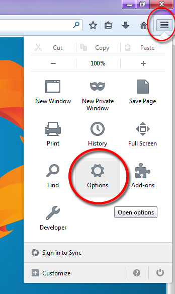
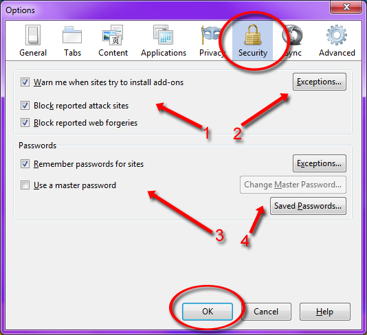

Lesson Navigation
Firefox Lessons
Security
It's important to understand how to update your own Firefox settings. Even though the settings are optimized automatically for your benefit, it is possible you may need slightly different settings to suit your own internet browsing style.
First, it is important to understand how you can change your security settings to meet your needs. The general rule is, more security is better than less security. Each security feature does something different.
You can navigate to your security settings by going to the top right corner of your Firefox browser and clicking on the menu button (it looks like three lines, see image below). After you click on the menu button, a menu similar to the one below will appear. You will then want to click on the "Options" icon, which we've circled in red.

When you click on the "Options" icon, it will bring up a window that looks like the one below. In the buttons at the top of the window, you'll see an option called "Security" with a lock icon above it. Click on this security button to get to your security settings.

The different features of Firefox security settings are labeled by number. Below, you'll find a description of each labeled part.
1. Website Interaction Checkboxes
These checkboxes control how your browser interacts with different website actions. "Warn me when sites try to install add-ons" will warn you when a website is trying to install a program to your browser. This should always be checked. "Block reported attack sites" will block you from accidentally entering any website that is on the Mozilla list of known attack websites. This should always be checked. "Block reported web forgeries" will block you from accidentally entering any website that is pretending to be another website. This should always be chekced.
2. Exceptions...
If you would like to make any website an exception for all of the rules listed in number 1, you can click this button and it will give you the option to add a website to the list of websites that don't have to follow these rules.
3. Password Checkboxes
These checkboxes control your password settings for various websites that you visit and logon to. If you want the browser to remember your passwords and automatically fill them out for you, make sure that the "Remember passwords for sites" is checked. "Use a master password" will allow you to create a password which will give your browser permission to fill in your saved password when you login to a website. For example, if you are logging into facebook and Firefox has your password for facebook saved, a window will appear prompting you to enter your master password so that Firefox can fill out your facebook password for you. This is useful because you can use the same master password to fill out passwords on all of the websites you use, but it is also dangerous because if a person learns your master password they have access to all of your logins.
4. Password Advanced Option Buttons
"Exceptions.." will take you to a list of websites which Firefox will NOT use the password rules on (in other words, if you have "remember passwords for sites" checked, the websites in this list will not have a saved password). "Change Master Password.." will bring you to a window where you can set or update your master password. "Saved Passwords.." will take you to a window where you can see all of the websites that Firefox has saved passwords for.
When you're all done setting up your security, click "OK" at the bottom of the screen to save all of your new settings.
Now that you know how your Firefox security settings work, you're ready to go! If you would like to review information about Firefox or the Firefox interface, click "Previous Lesson" below.
Helpful Links:


The Simply Social brand is Simply Social Inc. 2014. Simply Social only owns the Simply Social logo, and all other images are copyrighted by their respective owners. The sources for these images, as well as the website icons, can be found in the about page. This website was made for a class project, and is not intended for any kind of commerce or commercial use. Simply Social is not affiliated in any way with any of the other websites mentioned or linked to in this website.